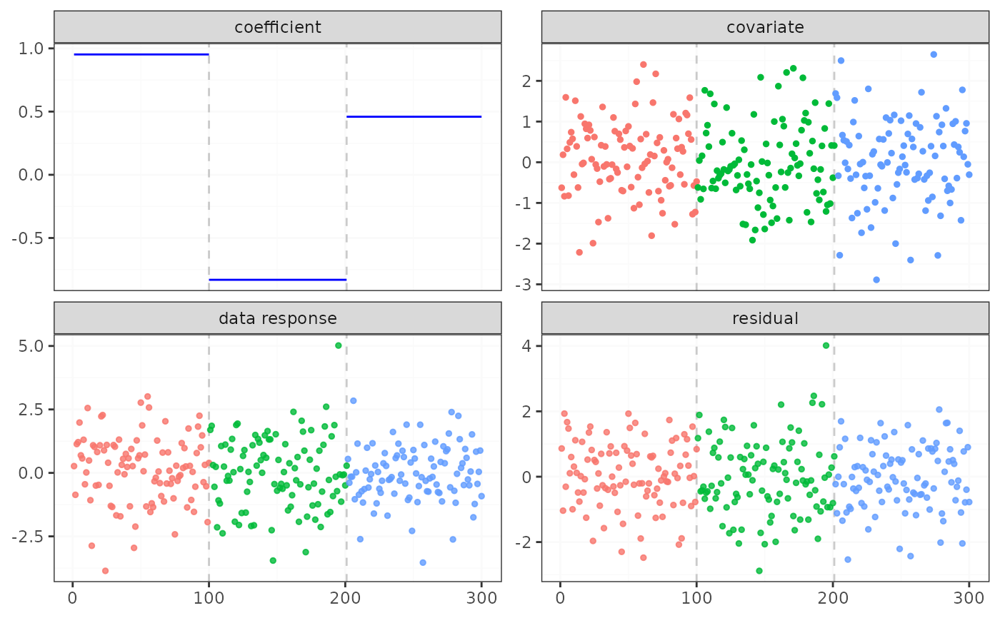
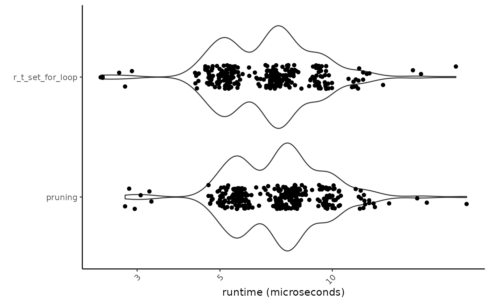

Plot the data and the change points for a fastcpd object
Usage
# S3 method for fastcpd
plot(
x,
color_max_count = Inf,
data_point_alpha = 0.8,
data_point_linewidth = 0.5,
data_point_size = 1,
legend_position = "none",
panel_background = ggplot2::element_blank(),
panel_border = ggplot2::element_rect(fill = NA, colour = "grey20"),
panel_grid_major = ggplot2::element_line(colour = "grey98"),
panel_grid_minor = ggplot2::element_line(colour = "grey98"),
segment_separator_alpha = 0.8,
segment_separator_color = "grey",
segment_separator_linetype = "dashed",
strip_background = ggplot2::element_rect(fill = "grey85", colour = "grey20"),
xlab = NULL,
ylab = NULL,
...
)
# S4 method for fastcpd,missing
plot(
x,
color_max_count = Inf,
data_point_alpha = 0.8,
data_point_linewidth = 0.5,
data_point_size = 1,
legend_position = "none",
panel_background = ggplot2::element_blank(),
panel_border = ggplot2::element_rect(fill = NA, colour = "grey20"),
panel_grid_major = ggplot2::element_line(colour = "grey98"),
panel_grid_minor = ggplot2::element_line(colour = "grey98"),
segment_separator_alpha = 0.8,
segment_separator_color = "grey",
segment_separator_linetype = "dashed",
strip_background = ggplot2::element_rect(fill = "grey85", colour = "grey20"),
xlab = NULL,
ylab = NULL,
...
)Arguments
- x
A fastcpd object.
- color_max_count
Maximum number of colors to use for the plotting of segments.
- data_point_alpha
Alpha of the data points.
- data_point_linewidth
Linewidth of the data points.
- data_point_size
Size of the data points.
- legend_position
Position of the legend.
- panel_background
Background of the panel.
- panel_border
Border of the panel.
- panel_grid_major
Major grid lines of the panel.
- panel_grid_minor
Minor grid lines of the panel.
- segment_separator_alpha
Alpha of the segment separator lines.
- segment_separator_color
Color of the segment separator lines.
- segment_separator_linetype
Linetype of the segment separator lines.
- strip_background
Background of the strip.
- xlab
Label for the x-axis.
- ylab
Label for the y-axis.
- ...
Ignored.
Examples
set.seed(1)
p <- 1
x <- mvtnorm::rmvnorm(300, rep(0, p), diag(p))
theta_0 <- matrix(c(1, -1, 0.5))
y <- c(
x[1:100, ] * theta_0[1, ] + rnorm(100, 0, 1),
x[101:200, ] * theta_0[2, ] + rnorm(100, 0, 1),
x[201:300, ] * theta_0[3, ] + rnorm(100, 0, 1)
)
result <- fastcpd.lm(cbind(y, x), r.clock = "fastcpd_profiler")
summary(result)
#>
#> Call:
#> fastcpd.lm(data = cbind(y, x), r.clock = "fastcpd_profiler")
#>
#> Change points:
#> 100 201
#>
#> Cost values:
#> 48.16996 66.1816 45.66268
#>
#> Parameters:
#> segment 1 segment 2 segment 3
#> 1 0.9520606 -0.8307605 0.4593161
plot(result)

RcppClock:::plot.RcppClock(fastcpd_profiler)
